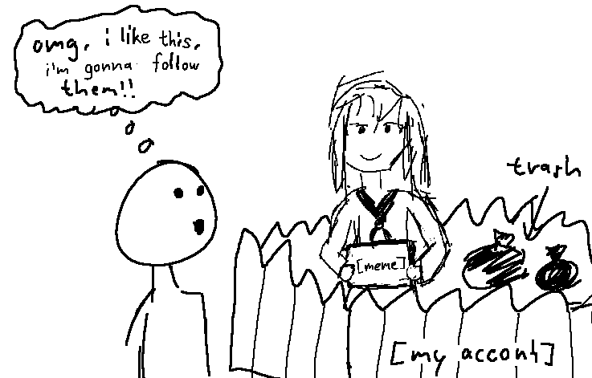
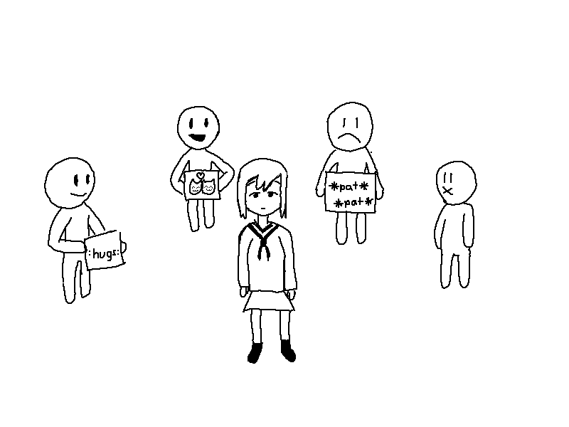

Why I hate online social platforms
Published on:
Edited on:
… or more like, what is wrong with social media nowadays.
Preface: This blog post is a bit more insensitive and many stereotypes are being thrown around here. I think you should be smart enough to know this. Make sure you have a package of salt lying around you. In other words this is an opinion piece.
Recently, I faced myself more and more depressed spending time on social platforms like Twitter or the Fediverse.
While both of the platforms are “great” (in their own regard), I can hardly say that I enjoy them nowadays.
I see so many stereotypes, and I’m just sick of them.
Free-speech dudes
One theme I seen multiple times is the political group of people.
While I am also interested in politics (and I do care what happens around me). Those people (especially US citizens) have the stereotype of being obnoxious about their polticial parties, even more so their US freedom of speech.
Even if I’m not on those website like Gab, Bitchute and what not those guys use.
And then when you check out that space, it becomes apparent that everything revolves about politicians, and nothing more. It revolves around “muh pride in mah country”.
Similar to this, among those people, it seems okay to scream every kind of insult, because it’s free-speech right? I am allowed to say anything even if it hurts other people, because that “right”, doesn’t include having empathy to others.
Imageboard refugees
While I am glad that more sacred communities exist for the more usually nerd topics – I can’t force myself to interact with someone where I get the feeling that they spend their time with users who have their heritage from boards like 4chan, 8chan or Lainchan.
I get this eerie feeling that these people are toxic, and more often than not, I am correct.
They might go around using their slang, one disagreement and they harass you either verbally or sending you disturbing content (both of which I have experienced). Another thing they like to say is “kill yourself” to everything they deem
I scraped 4chan for fun, seeing how many people recommend Fediverse, and it truly makes me sad knowing people say that they should join it, and when they do, they mention that there are “trannies”, and what not.
It doesn’t make it better, that Pleroma is basically the software for those people. You end up blocking some or many Pleroma instances just because of their user base (e.g. Poast, loli instances, etc.).
Maybe I am being a bit sensitive, I would accept that. I stopped wanting to read slurs all day long. I won’t break down crying just because someone said I was a “faggot” or something, but I’d appreciate not having my social feed full of it.
Twitter refugees
One trend I saw online becoming bigger and bigger, the harder you look, are the modern LGBTQ+/snowflake-esque communities.
You can’t go around visiting someone’s profile without seeing a generic Picrew with their sexuality flag in the background as their avatar.
Biographies

Even worse, when your eyes look further down, you start to read their bio which mostly consists of:
- their age
- their sexuality & orientation
- politics and social movements
- e.g. feminism, BLM, ACAB, anarchism, and similar
- way too many niche things that they claim they are
The thing is, this makes me avoid them. I am not interested in your because of your political opinion, or what movement you’re part of. It’s not you. If it is you, then I am not interested in you.
Block lists
But those same people, go around making block lists with people they can’t deal with on their own.
There are exceptions, where you might wanna say: “hmm, this person is really toxic to others, they shouldn’t be interacted with in the first place”, and this is valid.
This also carried over cancel culture, don’t forget that. I don’t have any first hand experience with FediBlock for example. What I can say though is that the smallest insult, out of context, makes someone from Mastodon (who sees it), add you to the list.
On the other hand though, the more people who are opposed to you are blocking you, the less headache you have interacting with them as well.
FOSS-bros
The Fediverse (primarily so Mastodon) is full of tech nerds, many of them praying to Richard Stallman or other shit.
You as Windows user are at an disadvantage, if you are talking about your OS, because someone will talk about Micro$oft, concerns about the privacy, about how it’s closed-source.
I for myself, expressed dislike towards the Linux ecosystem.
Why?
Because none of the software that this so-called community makes, is for me. It’s for them. For developers, not end-users. While you could use Ubuntu or Pop_OS, and be happy with it. I for the other hand am a developer, but simply not a Linux developer. I’m not into the “simple OS, no bloat” shit. I’m not them.
And yet, people go around pushing around the FOSS-agenda, while all of their software, can’t even work in tandom sometimes, they have many rough edges, no matter if you’re talking about XMPP and Matrix, or GNOME and KDE.
They all suck. And you can’t make them realize that.
Mindless users

Whenever I post something on social media, and it goes rounds around the network, most users seem to forget that a bio or a user’s previous posts exist, and only press “Follow” because they one repost of a meme.
I can hardly ever imagine those people wanting to follow me, because “I know what’s better for them”, and thus I end up rejecting their follow.
Crypto and NFTs
Crypto currency in of itself is a great concept, but the stigma became so bad.
It started with people abusing it in ways that look like every other financial scam. Ponzi schemes, alt-coins and stocks. It’s fucking insane.
Even worse, we got blessed with NFTs.
I swear, it’s so annoying to hear about.
What’s a digital ownership certificate good for?
That you own a fucking picrew-like avatar? A fucking MONKEY?
And beyond that, NFTs infect mainstream platforms, for no fucking reason. Just because people, and then companies, push it around.
Being sexual as an entire personality
One thing I faced on both Twitter and Fediverse, are people with exclusive lewd profiles.
Maybe it’s just me feeling uncomfortable seeing those on my public feed, or clicking on this certain link (lewd alt) they put on their bio.
The stereotype you can get from this are people, who post nudes, spread lewd illusts, or who are talking in a sexual tone publicly.
The biggest trigger for me about this, is when they put 🔞 or DNI in their profile. And I just sit there… disappointed maybe? The thing is… it’s useless. You’re on the internet, and especially on open social media, it’s not 4chan, there are going to be a wide range or users, even teen ones.
People would just say, ignore them. You’re right, ignore them. But I still don’t like the idea, how having someone who’s “uwu fuck me~” on Mastodon/Twitter or something.
But even beyond that, when people indicate “fuck off minors”, then I avoid them even still being over-age by then, like it’s forbidden to be young online.
I know that some people would say some things about this towards me. I know that – no need to tell me as well.
Unable to have a discussion
One thing I saw often come around, is how tiresome it is to keep a discussion going.
I have different opinion, for sure, and putting them out there, is sometimes so tiring.
The reason why is that there are people, which you can’t find a common ground with, they still are against your point/stance, they keep replying.
You end up muting the thread, because it’s just pointless, and with that comes regret.
It’s like being on /g/ trying to convince an Arch user why Windows is good in its own regard.
Superficial users

Another experience I have made is when you become open about your feelings and mood with your followers.
I must say, most responses you get online, are tiring, boring, if not even worthless.
I may be egoistic to expect that, but: I expect people to do better when you are feeling down. I expect people to write a direct message to you, maybe even talk to you, without their first message being “are you alright?”. Yeah, as if I want to reply to that. No.
Another thing I dislike about those people is simply that they have solid advice, but what if sad me, doesn’t want to hear all about it? Being down doesn’t mean you’re the most receptable towards advice. All you want is at least some empathy, and not generic empathy like the picture illustrates, no, at least some acknowledgement and attention.
Circle-jerking
With 2 years in the Fediverse, I realized what social groups were.
By around 2021, I left fedi.absturztau.be, to make my own instance to be on.
I thought this would stop all my worries back then, but now, I began to avoid the same people I started interacting with in my early days. And that’s because I started feeling out of place with them.
All of those people keep posting about their people, make insider jokes and have generally a “closed” circle. Those same people are superficial, which make you feel ignored or not thought of.
For me, I end up muting the entire group, just because how despicable they are.
Bad at talking
The most people I meet on these social platforms, myself included, don’t take any initiative to go beyond those platforms to something more direct like IMs.
Even when they do, the conversations feel shallow, quickly dying out. Especially when the opposite has no meaningful replies. There just isn’t mutual interest.
At the same time, I’m not the kinda person who likes being texted: “Hey, how are you? :)”, each day at an unconvenient time.